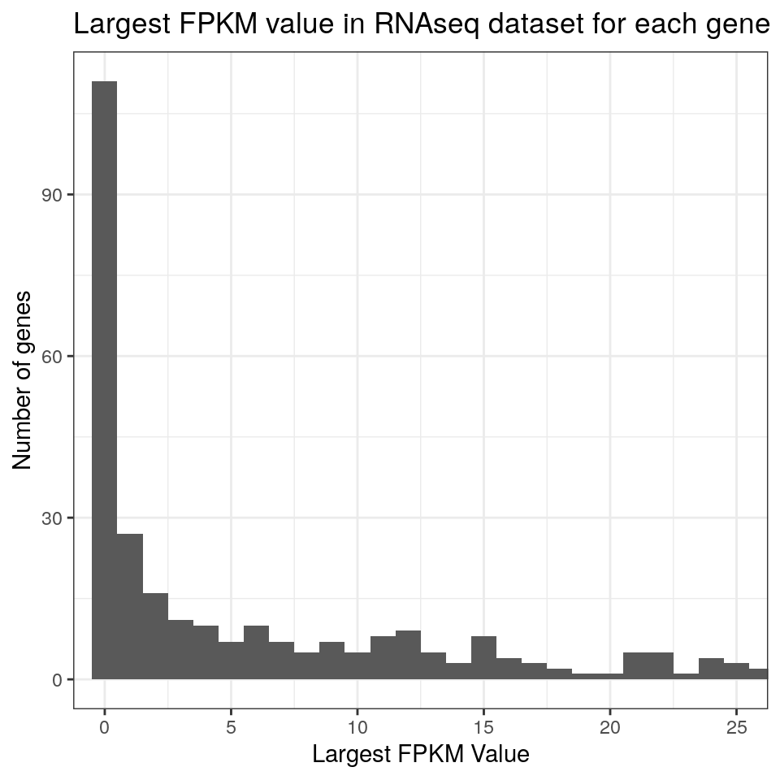
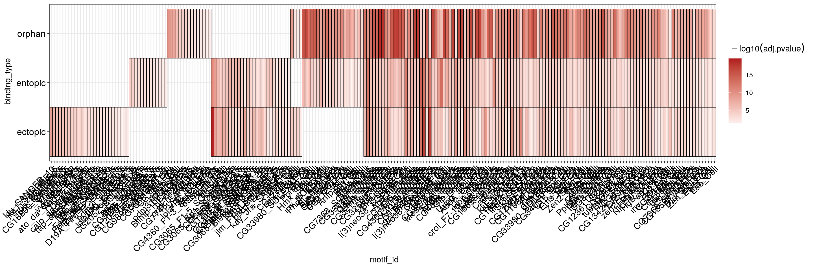
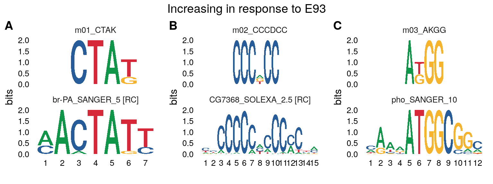
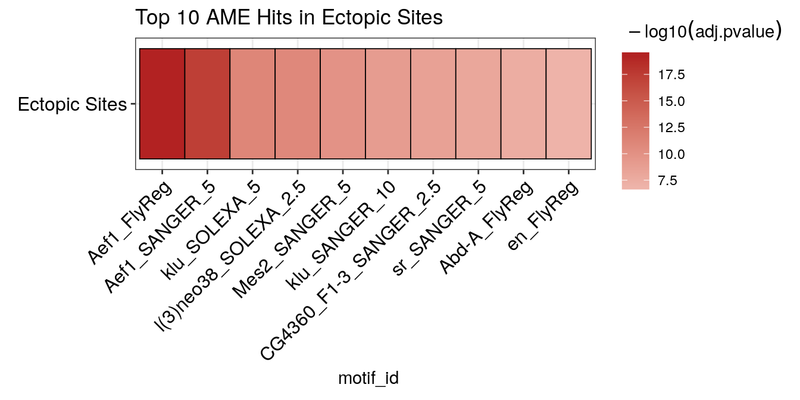
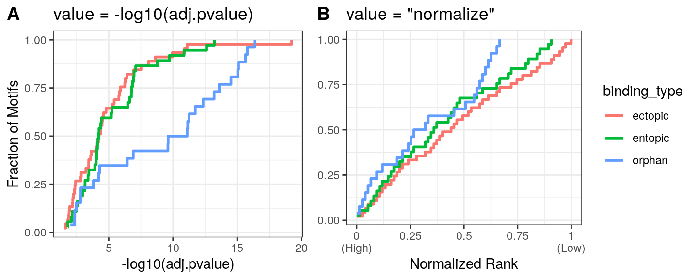
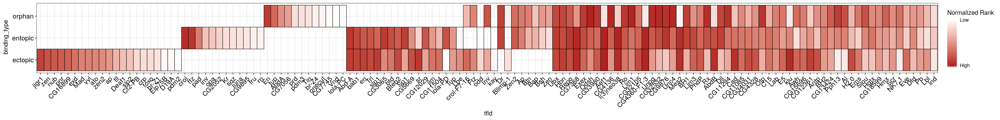
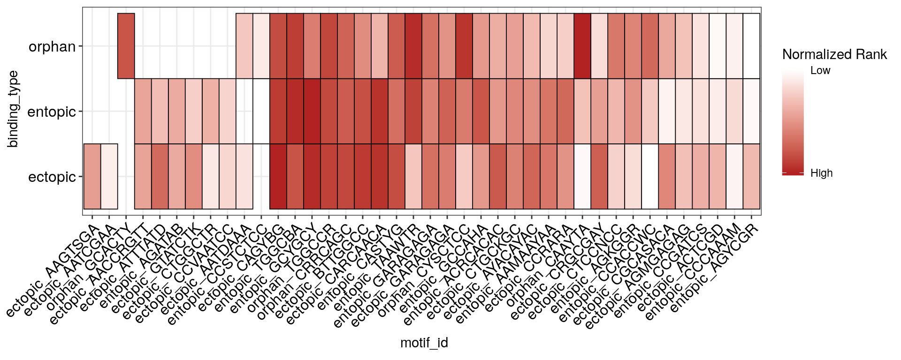
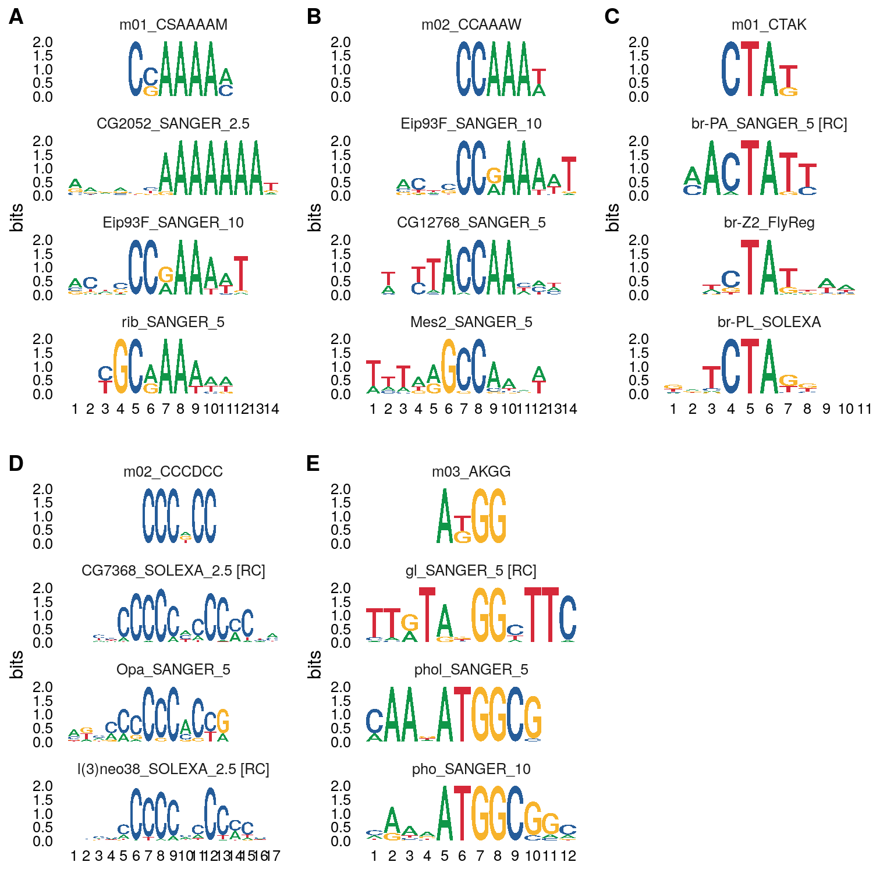
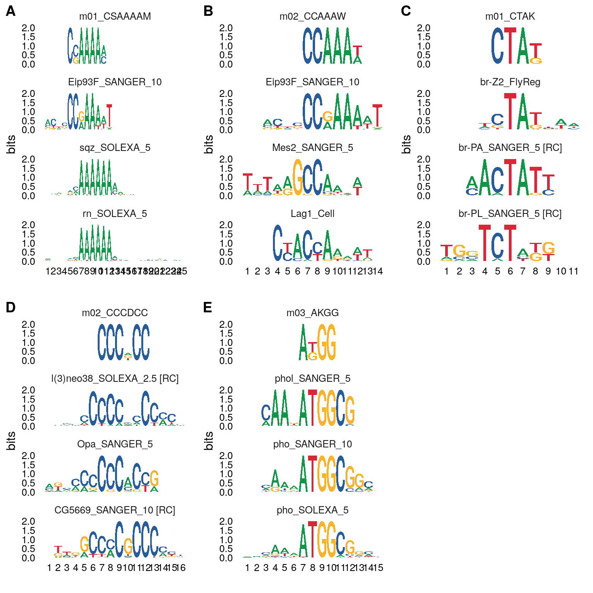

library(dremeR) library(magrittr) suppressPackageStartupMessages(library(GenomicRanges))
check_meme_install() #> checking main install #> ✔ /nas/longleaf/home/snystrom/meme/bin #> checking util installs #> ✔ /nas/longleaf/home/snystrom/meme/bin/dreme #> ✔ /nas/longleaf/home/snystrom/meme/bin/ame #> ✔ /nas/longleaf/home/snystrom/meme/bin/fimo #> ✔ /nas/longleaf/home/snystrom/meme/bin/tomtom
peaks <- system.file("extdata/peaks/e93_chr3.csv", package = "dremeR") %>% readr::read_csv() %>% GRanges
Motifs in opening vs closing sites
# These data use the dm3 reference genome dm.genome <- BSgenome.Dmelanogaster.UCSC.dm3::BSgenome.Dmelanogaster.UCSC.dm3 # compute summits using the summit_position column summits <- peaks %>% plyranges::anchor_start() %>% plyranges::mutate(width = 1) %>% plyranges::shift_right(mcols(.)$summit_position) # Get sequences in a 100bp window around the peak summit summit_flank <- summits %>% plyranges::anchor_center() %>% plyranges::mutate(width = 100) # split by response to E93 binding by_sens <- summit_flank %>% split(mcols(.)$e93_sensitive_behavior) %>% get_sequence(dm.genome)
dreme_by_sens_vs_static <- runDreme(by_sens, "Static")
dreme_results <- dreme_by_sens_vs_static %>% dplyr::bind_rows(.id = "e93_response")
meme_db_path <- system.file("extdata/db/fly_factor_survey_id.meme", package = "dremeR") options(meme_db = meme_db_path) all_res <- dreme_results %>% runTomTom(dist = "ed") #> Registered S3 method overwritten by 'treeio': #> method from #> root.phylo ape
all_res %>% view_tomtom_hits(3) %>% cowplot::plot_grid(plotlist = ., labels = "AUTO")

all_res %<>% force_best_match(c("m01_CSAAAAM" = "Eip93F_SANGER_10", "m03_AKGG" = "pho_SANGER_10"))
all_res %>% view_tomtom_hits(1) %>% cowplot::plot_grid(plotlist = ., labels = "AUTO")

all_res %>% dplyr::mutate(label = paste0(e93_response, " in response to E93")) %>% split(.$label) %>% purrr::imap(~{ top_hits <- view_tomtom_hits(.x, 1) %>% cowplot::plot_grid(plotlist = ., nrow = 1, labels = "AUTO") title <- cowplot::ggdraw() + cowplot::draw_text(.y) cowplot::plot_grid(plotlist = list(title, top_hits), ncol = 1, rel_heights = c(0.1, 1) ) }) #> $`Decreasing in response to E93`

#>
#> $`Increasing in response to E93`
Motif scanning with AME
by_binding <- summit_flank %>% split(mcols(.)$peak_binding_description) %>% get_sequence(dm.genome)
ame_by_binding <- by_binding %>% runAme
Visualizing AME results
The ame_plot_heatmap() function provides a quick way to visualize AME results. It is built on top of ggplot2, so all ggplot2 functions can be used to further modify the plot.
By default, it uses the -log10(adjusted p-value) as the heat values. See the documentation for additional notes on customization.
library(ggplot2) ame_by_binding$entopic %>% dplyr::filter(rank %in% 1:10) %>% ame_plot_heatmap(group_name = "Entopic Sites") + ggtitle("Top 10 AME Hits in Entopic Sites")

To plot results from multiple runs together, they must first be joined into 1 data frame. The ame_by_binding object is a list whose names correspond to the E93 binding category. The list can be combined into a data.frame using dplyr::bind_rows. Setting .id = "binding_type creates a new column binding_type that contains the names from the ame_by_binding list. In this way, the ame_res data.frame contains all AME results for each run, which can be distinguished by the binding_type column.
ame_res <- ame_by_binding %>% dplyr::bind_rows(.id = "binding_type")
It is possible to aggregate results from multiple runs into a heatmap by setting the group parameter in ame_plot_heatmap().
This is too many hits to view in this vignette, but you can see that the heatmap will plot motifs by their overlap across groups, where unique motifs are on the left, and shared motifs are on the right.
ame_res %>% ame_plot_heatmap(group = binding_type)
Reducing redundant motif hits
There is another key consideration for the above visualization and that is that in the FlyFactorSurvey database we used, different TFs can have multiple motif entries in the database which are all detected separately by AME. Here, when returning the top 5 hits from each group, you can see, for example, that a motif matching “Aef1” is reported 3 times within the top 5 hits of the ectopic sites (A similar result can also be seen in the top 10 entopic hits heatmap above). In this situation, it makes sense to summarize the data at the TF level, instead of the motif level. Note: There may be exceptions to this if for example, a TF has multiple DNA binding sequences it can recognize, in which case having multiple hits may reflect a biological property of your sequences. You will have to handle this on a case-by-case basis for interesting hits and different motif databases. Here, we can see that at least for Aef1, the consensus sequences are very similar.
ame_res %>% dplyr::group_by(binding_type) %>% dplyr::filter(rank %in% 1:5) %>% head(5) %>% dplyr::select(binding_type, rank, motif_id, motif_alt_id, consensus) #> # A tibble: 5 x 5 #> # Groups: binding_type [1] #> binding_type rank motif_id motif_alt_id consensus #> <chr> <int> <chr> <chr> <chr> #> 1 ectopic 1 Aef1_FlyReg FBgn0005694 CAACWACW #> 2 ectopic 2 CG4360-F1-3_SOLEXA FBgn0038787_2 KTTGTTGTTGTWRTN #> 3 ectopic 3 Aef1_SANGER_5 FBgn0005694_2 RCAACAACAAC #> 4 ectopic 4 Aef1_SOLEXA FBgn0005694_3 KGTTGTTGTTGTWRT #> 5 ectopic 5 CG7368_SOLEXA_2.5 FBgn0036179_2 KDGKGGGDGGGGGDR
How to solve this problem will vary with different motif databases (For details on how to pre-process a motif database, see vignette("tidy_motifs")). In the FlyFactorSurvey database, the motif_alt_id column contains a unique FBgn number for each TF. For entries of the same TF, the FBgn number is prepended with an _<number>. We can extract the FBgn number to use as a gene-level identifier, and reduce the matches to return 1 match per gene as follows:
ame_res %>% # the flyfactor genes have their Flybase gene numbers appended with a _<number> # this is to make the entries unique, but the gene ID is encoded before the _ # so I remove the _<number> with a regex, leaving the FBgn number. dplyr::mutate(gene_id = gsub("_\\d+", "", motif_alt_id)) %>% dplyr::ungroup() %>% # Reduce redundant TF hits by returning only the match with the lowest p-value # for each TF. It is important to group by binding_type because the analyses # were run separately, so these are different results (we want to return the # lowest p-value for each group a motif was found within). dplyr::group_by(binding_type, gene_id) %>% dplyr::filter(adj.pvalue == min(adj.pvalue)) %>% # add new id column to simplify motif name to TF name dplyr::mutate(tfid = strsplit(motif_id, "_")[[1]][1]) %>% ame_plot_heatmap(group = binding_type, id = tfid)

Issues with AME Heatmap Visualization
Finally, because the data for each binding type are generated from different AME runs, it is not the best idea to compare p-values across experiments (ie between heatmap rows), because the dynamic range of p-values will vary between groups. Here you can see that, for example, the orphan sites will have a very different scale of -log10(adjusted pvalues) than ectopic and entopic sites. In other words, because the dynamic range of values are different between experiments, placing them on the same scale for comparison may be misleading in certain contexts.
logpval_dist <- ame_res %>% ggplot(aes(-log10(adj.pvalue))) + stat_ecdf(aes(color = binding_type), size = 1, pad = FALSE) + labs(y = "Fraction of Motifs") + theme_bw() + theme(legend.position = "none") + labs(title = "value = -log10(adj.pvalue)")
We can partially overcome this limitation by filling the heatmap with the normalized rank value for each TF, which accounts for differences in total number of discovered motifs between AME runs. Although it does not completely abrograte differeces, the signal values for high-ranked motifs within groups will be more comparable. However, the normalized rank visualization eliminates all real values related to statistical significance! Instead, this visualization represents the relative ranks of hits within an AME run, which already pass a significance threshold set during runAME(). This means that even if several motifs have similar or even identical pvalues, their heatmap representation will be a different color value based on their ranked order in the results list. Both visualizations can be useful and reveal different properties of the data to the user. If in doubt, prefer the -log10(adj.pvalue) representation.
# rank_normalize transforms the ranks to values between 0 and 1 as follows: # (1 - rank)/(1 - max(rank)) normrank_dist <- ame_res %>% ggplot(aes(dremeR:::rank_normalize(rank))) + stat_ecdf(aes(color = binding_type), size = 1, pad = FALSE) + scale_x_continuous( breaks = c(0, 0.25, 0.5, 0.75, 1), labels = c("0\n(High)", 0.25, 0.5, 0.75, "1\n(Low)"), ) + labs(title = "value = \"normalize\"", y = NULL, x = "Normalized Rank", color = "Binding Type") + theme_bw()
Below is a comparison of the distribution of values when using -log10(adj.pvalue) (A) vs normalized ranks (B). Because orphan sites tend to have smaller p-values overall, the heatmap scale will be skewed towards the high values in the orphan data, making ectopic and entopic heat values lighter by comparison.

We achieve this by setting value = "normalize" in ame_plot_heatmap(). If plotting with multiple groups, it may be more appropriate to make this visualization.
This plot reveals that the motifs which tend to be shared across all 3 categories tend to be higher ranks in the output than the motifs unique to the different categories, which tend to come from lower ranks. This suggests that although there are differences in motif content across the three categories, they may be largely similar in motif makeup. We will investigate this question in more detail in the “Denovo motif similarity” section.
ame_res %>% dplyr::mutate(gene_id = gsub("_\\d+", "", motif_alt_id)) %>% dplyr::ungroup() %>% dplyr::group_by(binding_type, gene_id) %>% dplyr::filter(adj.pvalue == min(adj.pvalue)) %>% dplyr::mutate(tfid = strsplit(motif_id, "_")[[1]][1]) %>% ame_plot_heatmap(group = binding_type, id = tfid, value = "normalize")

FIMO
Because we discover a de-novo motif from DREME that matches to E93, it can be useful to scan peaks for motif occurrances to further examine properties of different peak categories.
Although we could also import the motifs from our local .meme database file, it is also possible to use motifs pulled from a MotifDb query as follows.
e93_motif <- MotifDb::MotifDb %>% # Query the database for the E93 motif using it's gene name MotifDb::query("Eip93F") %>% # Convert from motifdb format to universalmotif format universalmotif::convert_motifs() %>% # The result is a list, to simplify the object, return it as a single universalmotif .[[1]] #> See system.file("LICENSE", package="MotifDb") for use restrictions. # Rename the motif from it's flybase gene number to a more user-friendly name e93_motif["name"] <- "E93" e93_motif #> #> Motif name: E93 #> Alternate name: Eip93F_SANGER_10_FBgn0013948 #> Organism: Dmelanogaster #> Alphabet: DNA #> Type: PPM #> Strands: +- #> Total IC: 12.12 #> Consensus: ACNSCCRAAAWT #> Target sites: 18 #> Extra info: [dataSource] FlyFactorSurvey #> #> A C N S C C R A A A W T #> A 0.58 0.05 0.37 0.05 0 0 0.42 1 1 0.84 0.58 0.06 #> C 0.21 0.68 0.16 0.53 1 1 0.00 0 0 0.00 0.05 0.00 #> G 0.21 0.11 0.11 0.32 0 0 0.58 0 0 0.00 0.00 0.06 #> T 0.00 0.16 0.37 0.11 0 0 0.00 0 0 0.16 0.37 0.89
Just like runDreme() and runAme(), runFimo() takes a Biostrings::XStringSet as input. Using get_sequence() to generate these for DNA sequences is preferred because it creates sequence inputs that can be parsed into genomic coordinates by Fimo.
fimo_res <- summit_flank %>% get_sequence(dm.genome) %>% runFimo(motifs = e93_motif, thresh = 1e-3)
The results of runFimo() are returned as a GRanges object containing the positions of each motif discovered in the input sequences. The best way to integrate these data with our input peaks is to use the plyranges suite of tools for performing overlaps and joins between GRanges objects.
fimo_res #> GRanges object with 1542 ranges and 6 metadata columns: #> seqnames ranges strand | motif_id #> <Rle> <IRanges> <Rle> | <character> #> [1] chr3L 66285-66296 + | E93 #> [2] chr3L 66310-66321 - | E93 #> [3] chr3L 70891-70902 - | E93 #> [4] chr3L 135066-135077 + | E93 #> [5] chr3L 138527-138538 - | E93 #> ... ... ... ... . ... #> [1538] chr3R 27548873-27548884 - | E93 #> [1539] chr3R 27754398-27754409 - | E93 #> [1540] chr3R 27754407-27754418 + | E93 #> [1541] chr3R 27780275-27780286 + | E93 #> [1542] chr3R 27853336-27853347 - | E93 #> motif_alt_id score pvalue qvalue #> <character> <numeric> <numeric> <logical> #> [1] Eip93F_SANGER_10_FBgn0013948 5.22 0.000436 <NA> #> [2] Eip93F_SANGER_10_FBgn0013948 14.25 1.01e-05 <NA> #> [3] Eip93F_SANGER_10_FBgn0013948 5.64 0.000379 <NA> #> [4] Eip93F_SANGER_10_FBgn0013948 4.4 0.000571 <NA> #> [5] Eip93F_SANGER_10_FBgn0013948 10.1 8.96e-05 <NA> #> ... ... ... ... ... #> [1538] Eip93F_SANGER_10_FBgn0013948 5.57 0.000391 <NA> #> [1539] Eip93F_SANGER_10_FBgn0013948 7.37 0.000222 <NA> #> [1540] Eip93F_SANGER_10_FBgn0013948 7.84 0.000192 <NA> #> [1541] Eip93F_SANGER_10_FBgn0013948 8.75 0.000145 <NA> #> [1542] Eip93F_SANGER_10_FBgn0013948 4.59 0.000536 <NA> #> matched_sequence #> <logical> #> [1] <NA> #> [2] <NA> #> [3] <NA> #> [4] <NA> #> [5] <NA> #> ... ... #> [1538] <NA> #> [1539] <NA> #> [1540] <NA> #> [1541] <NA> #> [1542] <NA> #> ------- #> seqinfo: 2 sequences from an unspecified genome; no seqlengths
Counting the number of motifs per peak
plyranges extends dplyr-like syntax to range objects. Here we add a count for each motif per peak in the n_motifs column. We also add a column has_motif which will be a binary indicator of whether a peak contains any motifs.
summit_flank %<>% # Note, if running FIMO with multiple motifs, this solution will not work # as it will count all motifs within the fimo-results without splitting by motif_id plyranges::mutate(n_motifs = plyranges::count_overlaps(., fimo_res), has_motif = n_motifs > 0)
First, to we want to determine whether E93 sensitive sites are more likely to have E93 motifs in certain response types. Here we can see that sensitive decreasing sites are more likely to have E93 motifs than sensitive increasing or insensitive static sites.
summit_flank %>% data.frame %>% dplyr::mutate(has_match = dplyr::if_else(has_motif, "Match", "No Match")) %>% ggplot(aes(e93_sensitive_behavior)) + geom_bar(aes(fill = forcats::fct_rev(has_match)), position = "fill") + scale_fill_manual(values = c("Match" = "firebrick", "No Match" = "Black")) + labs(fill = "E93 Motif Match", y = "Fraction of Sites", x = "Response to E93 binding")

To investigate whether E93-sensitive sites that open/close/don’t change have different numbers of E93 motifs, we plot the fraction of sites with each number of motifs. Here we can see that in addition to being more likely to contain an E93 motif, sensitive decreasing sites are more likely to to contain 2 or more matches, where 10% contain at least 2 motifs.
summit_flank %>% # currently, group operations are faster as data.frames, so we convert to data.frame data.frame %>% dplyr::group_by(e93_sensitive_behavior, n_motifs) %>% dplyr::count() %>% dplyr::group_by(e93_sensitive_behavior) %>% dplyr::mutate(frac = n/sum(n)) %>% ggplot(aes(n_motifs, frac)) + geom_line(aes(color = e93_sensitive_behavior), size = 1) + labs(y = "Fraction of Sites", x = "Number of E93 Motifs", color = "Response to E93 Binding") + theme_bw()

Finally, we want to assess whether the quality of E93 motifs is different between sensitivity categories. To examine this, we need to determine which motifs are found in which peaks. We use the plyranges::join_overlap_intersect to return motif entries appended with peak-level metadata, like the peak id each motif is found within.
# return position of each motif match w/ peak metadata intersect <- summit_flank %>% plyranges::join_overlap_intersect(fimo_res)
We use the FIMO score as a proxy for quality, where higher scores are better matches to the motif. Here we examine only the best match (highest score) motif within each peak.
intersect %>% data.frame %>% dplyr::group_by(id) %>% # Keep only motifs w/ the highest score within a peak dplyr::filter(score == max(score)) %>% ggplot(aes(e93_sensitive_behavior, score)) + geom_boxplot(aes(fill = e93_sensitive_behavior), notch = T, width = 0.5) + guides(fill = "none") + labs(x = "Response to E93", y = "FIMO Score") + theme_bw()
The Anderson-Darling test can be used to test differences in the distribution of FIMO scores across multiple groups. For a pairwise comparison, a Kolmogorov-Smirnov test is commonly used instead.
intersect %>% data.frame %>% dplyr::group_by(id) %>% dplyr::filter(score == max(score)) %>% dplyr::mutate(behavior = factor(e93_sensitive_behavior)) %>% PMCMRplus::adAllPairsTest(score ~ behavior, ., p.adjust.method = "fdr") #> #> Pairwise comparisons using Anderson-Darling All-Pairs Test #> data: score by behavior #> Static Increasing #> Increasing 0.02132 - #> Decreasing 0.00011 1.5e-05 #> #> P value adjustment method: fdr #> alternative hypothesis: two.sided
Centrality of E93 motif
Next we want to visualize whether the E93 motif has altered positioning across the response categories. To do this we add the metadata for each nearest motif to our peak summits. Setting distance = TRUE in plyranges::join_nearest adds a distance column indicating the distance to the nearest joined region.
summit_nearest_e93_motif <- summit_flank %>% plyranges::anchor_center() %>% plyranges::mutate(width = 1) %>% plyranges::join_nearest(fimo_res, distance = TRUE)
summit_nearest_e93_motif %>% data.frame %>% dplyr::filter(has_motif == TRUE) %>% ggplot(aes(distance)) + stat_ecdf(aes(color = e93_sensitive_behavior), size = 1, pad = FALSE) + labs(x = "Distance to nearest E93 Motif", y = "Fraction of Sites", color = "E93 Response") + theme_linedraw()

summit_nearest_e93_motif %>% data.frame %>% dplyr::filter(has_motif == TRUE) %>% dplyr::mutate(behavior = factor(e93_sensitive_behavior)) %>% # Anderson-darling test for multiple distributions PMCMRplus::adAllPairsTest(distance ~ behavior, ., p.adjust.method = "fdr") #> #> Pairwise comparisons using Anderson-Darling All-Pairs Test #> data: distance by behavior #> Decreasing Increasing #> Increasing 0.058 - #> Static 0.021 0.945 #> #> P value adjustment method: fdr #> alternative hypothesis: two.sided
Denovo motif similarity by binding
# The above code chunk takes a long time to run. # dremeR is packaged with the results of this run in the "example_dreme_by_binding" dataset # which can be loaded as follows: data("example_dreme_by_binding", package = "dremeR") dreme_by_binding <- example_dreme_by_binding %>% dplyr::bind_rows(.id = "binding_type")
Rename the motifs to indicate the binding category they were discovered in.
dreme_by_binding_renamed <- dreme_by_binding %>% dplyr::mutate(name = paste(binding_type, seq, sep = "_")) %>% # update_motifs updates the information in the special `motif` column update_motifs()
cols <- colorRampPalette(c("white", "dodgerblue4"))(255) anno.df <- dreme_by_binding_renamed %>% dplyr::select(name, binding_type) %>% tibble::column_to_rownames("name") dreme_by_binding_renamed %>% {universalmotif::compare_motifs(.$motif, method = "PCC")} %>% pheatmap::pheatmap(color = cols, breaks = seq(0, 1, by = 1/255), annotation_col = anno.df, show_colnames = FALSE)
Test Denovo motif enrichment using AME
The above analysis suggests the motif content of the different binding categories are highly similar. To extend these analyses, we can use AME to test for motif enrichment of the denovo discovered motifs within each binding category.
runAme() allows using a runDreme() results object as the database input by passing it within a list(). Naming the list() entry produces an informative motif_db name in the results data.frame.
ame_denovo_by_binding <- by_binding %>% runAme(database = list("denovo_binding_motifs" = dreme_by_binding_renamed)) %>% dplyr::bind_rows(.id = "binding_type")
Plotting the heatmap of results reveals that indeed a majority of the Denovo motifs discovered within a single category are detected in all 3 categories, supporting the conclusion that orphan, ectopic, and entopic sites are highly similar in sequence content.
ame_denovo_by_binding %>% ame_plot_heatmap(group = binding_type)
However, there are 3 interesting motifs which distinguish orphan and ectopic sites from entopic sites. To help identify which TFs these motifs might belong to, we can use TomTom to match them to known motifs.
First, we isolate the motifs by ID which are unique to 1 group.
ame_denovo_binding_unique <- ame_denovo_by_binding %>% # Counts the number of groups a motif is found within dplyr::group_by(motif_id) %>% dplyr::add_count() %>% # Selects only rows from motifs found in 1 group dplyr::filter(n == 1)
Next, we use the motif id’s from the AME results to filter the dreme results, and run TomTom on that subset.
dreme_by_binding_unique <- dreme_by_binding_renamed %>% dplyr::filter(name %in% ame_denovo_binding_unique$motif_id) %>% runTomTom(dist = "ed")
Finally, we visualize the TomTom results to identify candidate TFs driving the presence of ectopic and orphan sites.
dreme_by_binding_unique %>% view_tomtom_hits(3) %>% cowplot::plot_grid(plotlist = ., nrow = 1, labels = "AUTO")